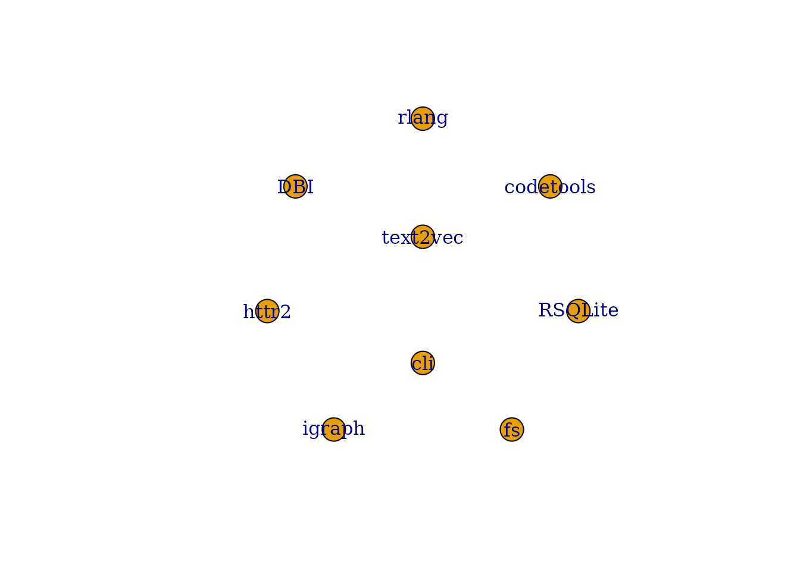

rrlmgraph builds a typed knowledge graph of an R project
and uses it to supply large language models (LLMs) with precise,
token-budgeted context. This vignette walks through the full workflow on
a small self-contained example.
Installation
install.packages("rrlmgraph")
# For optional LLM chat integration:
install.packages("ellmer")1. Building your first graph
build_rrlm_graph() accepts a path to any R project – a
package, a scripts folder, or a Shiny app – and returns an
rrlm_graph object.
library(rrlmgraph)
# Build a graph for rrlmgraph's own source -- a real package with many
# functions and edges, so all downstream examples produce meaningful output.
graph <- build_rrlm_graph(pkg_dir, verbose = TRUE)
#> Detecting project at /home/runner/work/_temp/Library/rrlmgraph
#> Parsing 0 R file(s)
#> Warning: No function nodes found in /home/runner/work/_temp/Library/rrlmgraph. Empty
#> graph returned.
#> Building CALLS edges
#> Building IMPORT edges
#> Building TEST edges
#> Assembling igraph
#> Computing PageRank
#> Embedding nodes with method 'tfidf'
#> Computing semantic similarity edges (threshold 0.7)
#> Done in 0.35s -- 9 nodes, 0 edgesThe function:
- Detects the project type (package / scripts / Shiny app)
- Parses every
.Rfile into function nodes via AST analysis - Resolves CALLS, IMPORTS, and TEST edges between nodes
- Fits TF-IDF embeddings for semantic similarity
2. Inspecting the graph
summary(graph)
#> IGRAPH af4913a DNW- 9 0 --
#> + attr: project_name (g/c), project_root (g/c), project_type (g/c),
#> | r_version (g/c), build_time (g/n), build_at (g/c), embed_method
#> | (g/c), embed_model (g/x), cache_path (g/c), name (v/c), node_type
#> | (v/c), file (v/c), line_start (v/n), line_end (v/n), signature (v/c),
#> | complexity (v/n), pagerank (v/n), embedding (v/x), weight (e/n),
#> | edge_type (e/c)
print(graph)
#> IGRAPH af4913a DNW- 9 0 --
#> + attr: project_name (g/c), project_root (g/c), project_type (g/c),
#> | r_version (g/c), build_time (g/n), build_at (g/c), embed_method
#> | (g/c), embed_model (g/x), cache_path (g/c), name (v/c), node_type
#> | (v/c), file (v/c), line_start (v/n), line_end (v/n), signature (v/c),
#> | complexity (v/n), pagerank (v/n), embedding (v/x), weight (e/n),
#> | edge_type (e/c)
#> + edges from af4913a (vertex names):plot() draws a force-directed layout coloured by node
type:
- steelblue – user-defined functions
- grey70 – package / imported functions
- seagreen3 – test files
- lightyellow – other nodes
plot(graph)
3. Querying context
query_context() performs relevance-guided BFS from the
most relevant nodes and returns a token-budgeted context window ideal
for LLM prompts.
ctx <- query_context(
graph,
query = "How does graph traversal select nodes for context?",
budget_tokens = 400L,
verbose = TRUE
)
#> Seed node: "cli"
# Nodes selected for the context window
ctx$nodes
#> [1] "cli"
# Number of tokens used
ctx$tokens_used
#> [1] 82The assembled context string – ready to paste into a system prompt:
cat(ctx$context_string)
#> # rrlm_graph Context
#> # Project: rrlmgraph | R 4.5.2 | ~51 tokens
#> # Query: How does graph traversal select nodes for context?
#>
#> ## CORE FUNCTIONS
#> ---
#> ### cli
#> cli
#>
#> ## CONSTRAINTS
#> ---
#> Only use the functions and packages listed above. Do not invent APIs, function names, or arguments not shown here. If unsure, ask for clarification.4. Chatting with context (LLM required)
chat_with_context() assembles the context and sends it
to an LLM. Supported providers via the ellmer package:
# OpenAI (default) -- requires OPENAI_API_KEY
answer <- chat_with_context(
graph,
"How does prepare_data() ensure clean input?"
)
cat(answer)
# GitHub Models Marketplace -- requires GITHUB_PAT
answer <- chat_with_context(
graph,
"What does fit_model() return?",
provider = "github",
model = "gpt-4o-mini"
)
# Local Ollama -- no API key needed
answer <- chat_with_context(
graph,
"Summarise the prediction pipeline.",
provider = "ollama",
model = "llama3.2"
)
# Anthropic Claude -- requires ANTHROPIC_API_KEY
answer <- chat_with_context(
graph,
"Which function calls prepare_data()?",
provider = "anthropic"
)Each call automatically logs the query, nodes used, and a response
excerpt to .rrlmgraph/task_trace.jsonl inside the project
root. This trace is used by update_task_weights() to boost
frequently-referenced nodes in future relevance scoring.
5. Incremental updates
After editing source files you do not need to rebuild the full graph.
update_graph_incremental() re-parses only the changed
files:
# Simulate editing a file
writeLines(c(
"#' Prepare data (updated)",
"#'",
"#' @param raw A data.frame of raw values.",
"#' @param remove_na Logical. Remove rows with NAs. Default TRUE.",
"#' @return A cleaned data.frame.",
"#' @export",
"prepare_data <- function(raw, remove_na = TRUE) {",
" if (remove_na) raw <- raw[complete.cases(raw), ]",
" raw",
"}"
), file.path(proj_dir, "R", "data_prep.R"))
graph_small <- update_graph_incremental(
graph_small,
changed_files = file.path(proj_dir, "R", "data_prep.R"),
verbose = TRUE
)
#>
#> ── Incremental graph update ──
#>
#> Changed files: /tmp/RtmpHchp6R/mypkg_demo/R/data_prep.R
#> Re-parsing 1 file(s).
#> No new nodes; finalising graph.
#> Persisting cache to /tmp/RtmpHchp6R/mypkg_demo.
#> Graph cached at /tmp/RtmpHchp6R/mypkg_demo/.rrlmgraph
summary(graph_small)
#> IGRAPH 6db780a DNW- 0 0 --
#> + attr: project_name (g/c), project_root (g/c), project_type (g/c),
#> | r_version (g/c), build_time (g/n), build_at (g/c), embed_method
#> | (g/c), embed_model (g/x), cache_path (g/c), name (v/c), node_type
#> | (v/c), file (v/c), line_start (v/n), line_end (v/n), signature (v/c),
#> | complexity (v/n), pagerank (v/n), embedding (v/x), weight (e/n),
#> | edge_type (e/c)6. Caching the graph
For large projects, save the built graph to avoid re-parsing on every session:
# Save to <project>/.rrlmgraph/graph.rds
save_graph_cache(graph)
# Restore in a later session
graph <- load_graph_cache(proj_dir)7. Generating Copilot instructions
generate_instructions() writes a
.github/copilot-instructions.md file that primes GitHub
Copilot with project-specific context derived from the graph:
generate_instructions(graph, max_tokens = 3000L)The generated file describes the project structure, key functions, and their call relationships, giving Copilot accurate context without manual maintenance.
8. Using the MCP server
For integration with VS Code and other MCP-capable editors, see the companion package rrlmgraph-mcp: https://github.com/davidrsch/rrlmgraph-mcp
The MCP server exposes the SQLite-persisted graph (written by
export_to_sqlite()) to any client that supports the Model
Context Protocol, enabling IDE-level context injection independent of
the R console.